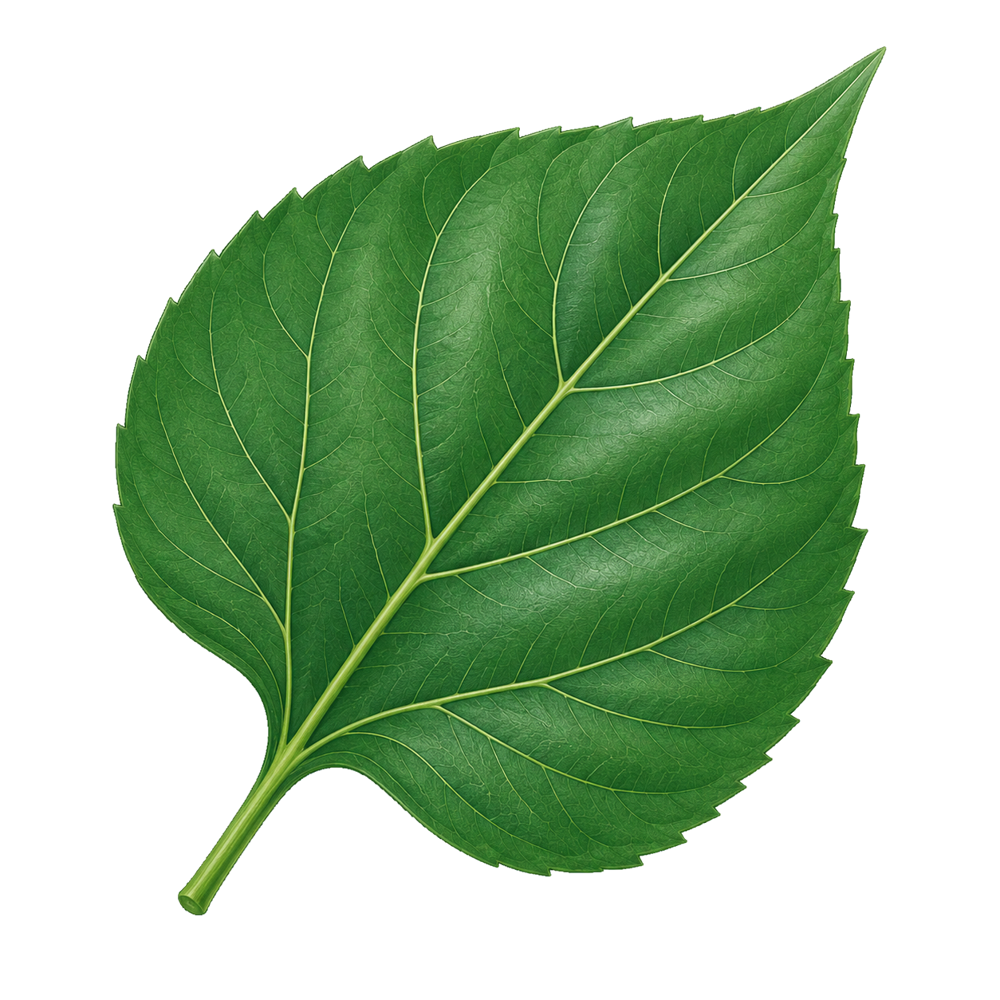
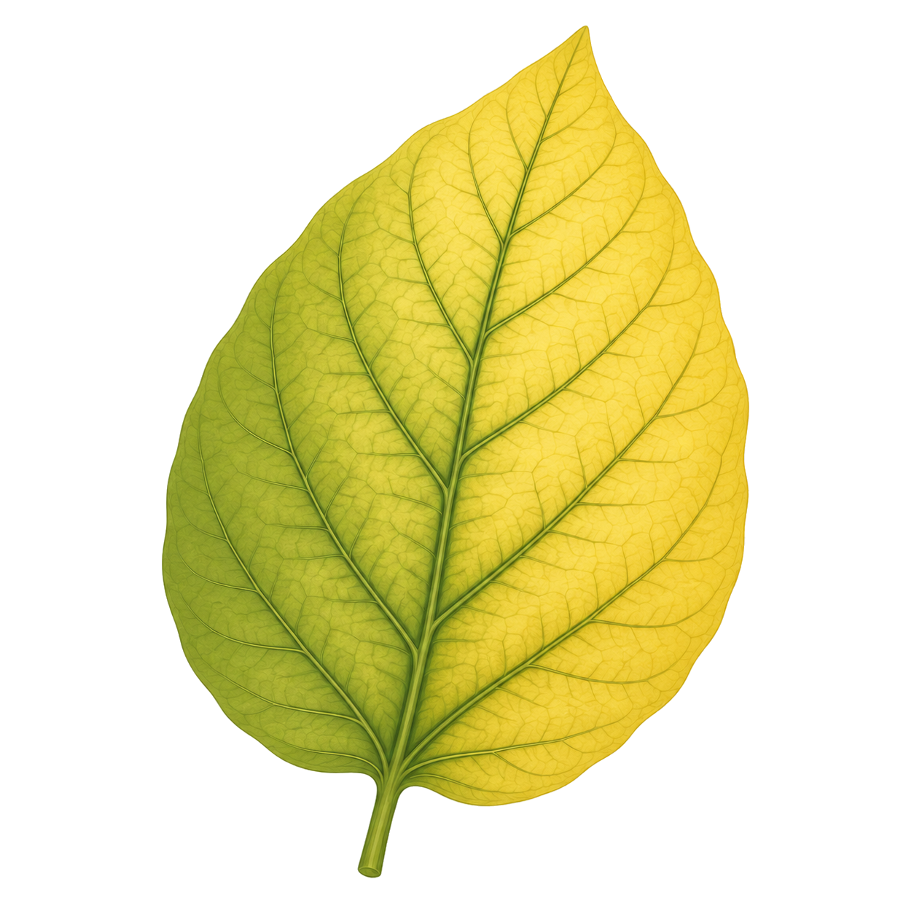
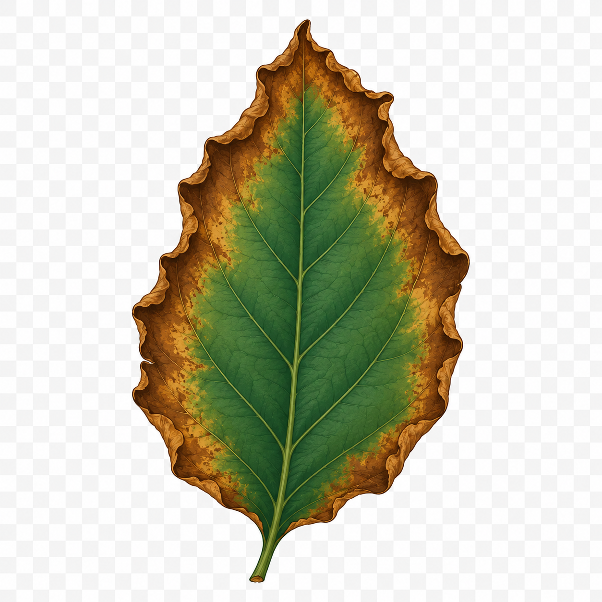
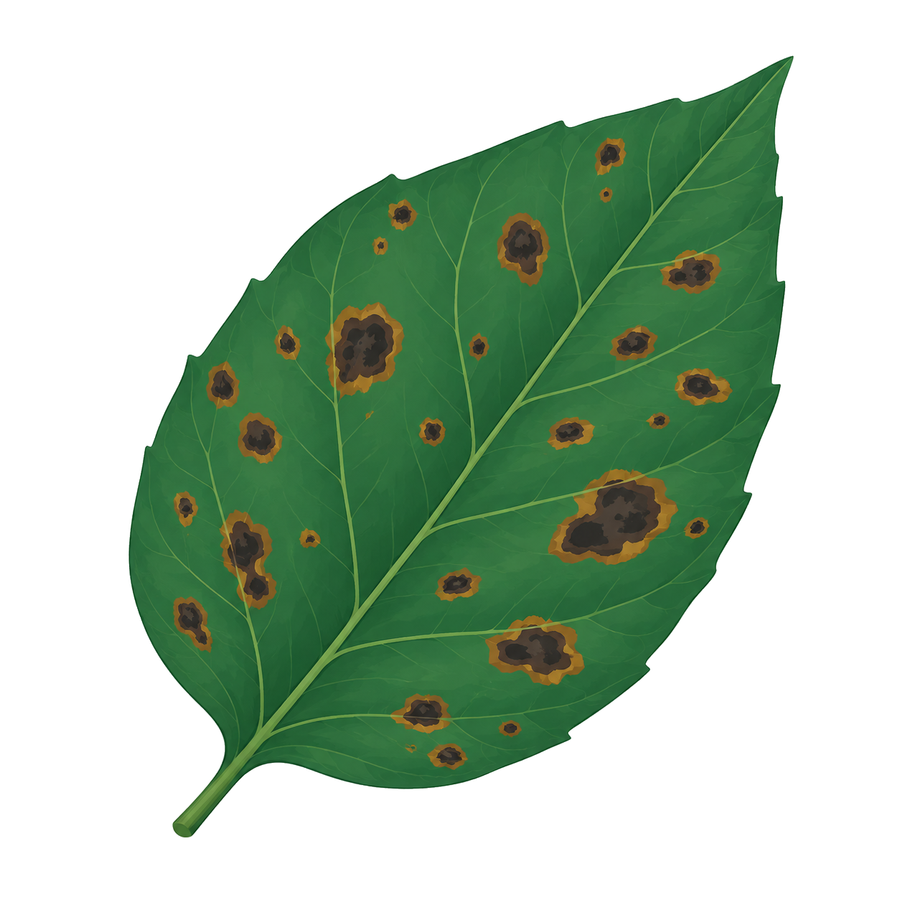
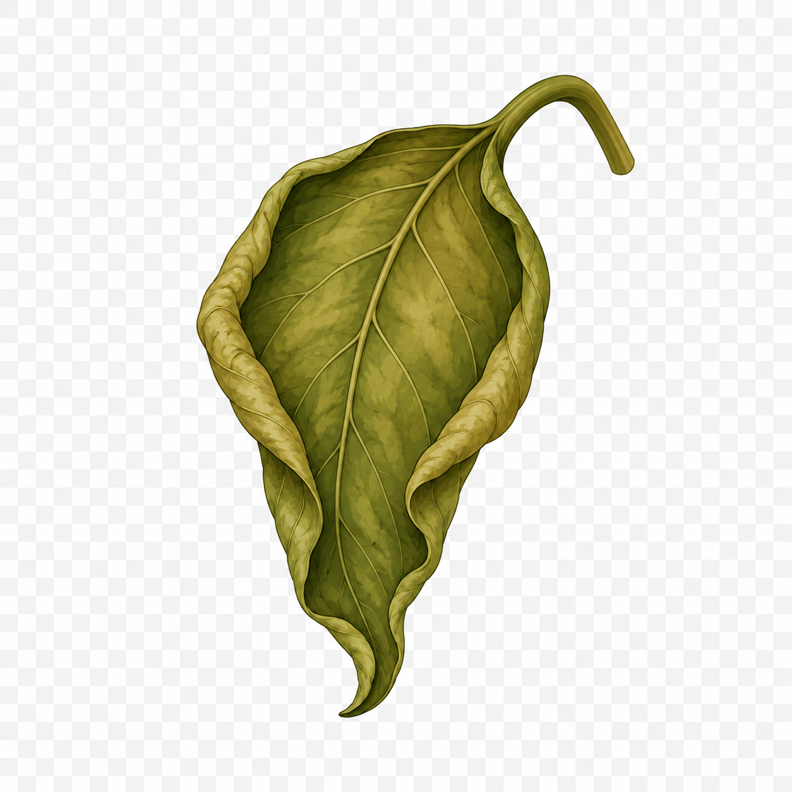

叶片损伤：最容易被看见的污染信号
叶片是植物与外界环境接触最直接的器官，也是污染伤害最直观的"记录纸"。当空气中的有害气体侵袭、水体中的毒素渗透、土壤中的重金属累积——叶片总是第一个发出警报。读懂叶片上的信号，就是读懂环境发出的求救信。
小葵体检状态
叶片状态对比

健康叶片
叶片翠绿，叶脉清晰，表面光滑，没有斑点或损伤。
症状对照表

叶片发黄
原因：叶绿素合成受阻，营养吸收通道被干扰——叶片正在失去制造养分的"工厂"。SO₂抑制5-氨基乙酰丙酸脱水酶（ALAD）活性，阻断叶绿素合成途径；同时激活叶绿素酶，加速已有叶绿素降解。缺镁、缺铁也会导致黄化——重金属污染正是通过竞争性抑制铁、镁吸收间接引发失绿。
急性症状：SO₂浓度>0.5 ppm暴露4小时，叶绿素下降15-25%；慢性症状：长期低浓度暴露导致渐进性黄化

叶缘焦枯
原因：臭氧侵蚀与酸性沉降刺激——叶缘细胞正在被"灼伤"。O₃通过气孔进入后，在叶肉细胞间隙中浓度最高的区域恰是叶缘和叶尖——这些部位气孔密度最大、气体交换最活跃，因此损伤也最集中。活性氧攻击细胞膜引发膜脂过氧化，细胞失水干枯，呈现褐色焦枯状。
O₃浓度40-60 ppb即可出现叶缘焦枯；敏感植物如菜豆、菠菜在30 ppb下即有可见伤害

叶面斑点
原因：臭氧等强氧化性污染物侵入——叶面正在被"蚀刻"出坏死斑。斑点是细胞死亡（坏死）的直接证据：O₃诱导的活性氧突破抗氧化防线后，叶肉细胞发生程序性死亡（PCD），死亡区域脱水收缩形成肉眼可见的褐色或黑色斑点。斑点大小与O₃暴露剂量正相关——急性暴露产生大片不规则坏死斑，慢性暴露产生细小密集的斑点。
坏死斑是空气污染的"指纹"——不同污染物产生不同形态的斑点，可用于污染源鉴定

叶片卷曲
原因：根系受损导致水分供应不足——叶片正在因"干渴"而蜷缩。当根系吸水能力下降，叶片膨压降低，细胞失去膨胀力。叶片上下表皮细胞膨压变化不均匀时，叶片向膨压低的一侧弯曲卷曲。此外，重金属干扰生长素极性运输，导致叶片两侧生长速率不均，也会引发卷曲。卷曲进一步减少受光面积，光合作用雪上加霜。
卷曲常与萎蔫相伴出现，是根系功能严重受损的信号——意味着整株植物的水分平衡已经崩溃